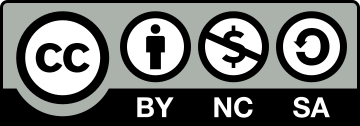

Copyright
 Except where otherwise noted, content on this site is my work and is licensed under CC BY-NC-SA 4.0. If you want to use my content and the terms of that license don't work for you, feel free to get in touch!
Exceptions
- Creative Commons logos and trademarks are not CC-licensed and are used according to the Creative Commons Trademark Policy (downloaded here).
- The fonts used on this website are not CC-licensed and are used according to the terms of their respective licenses.
-
This site's favicon is based on a black and white icon by Lorc (via Wikimedia Commons), which is licensed under CC BY 3.0. The modified icon is licensed under CC BY 4.0.